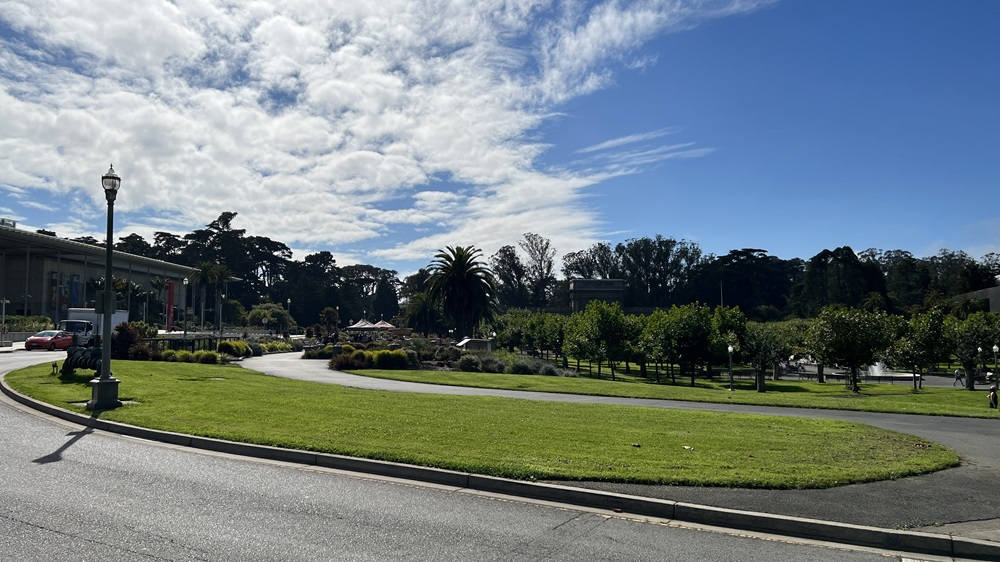
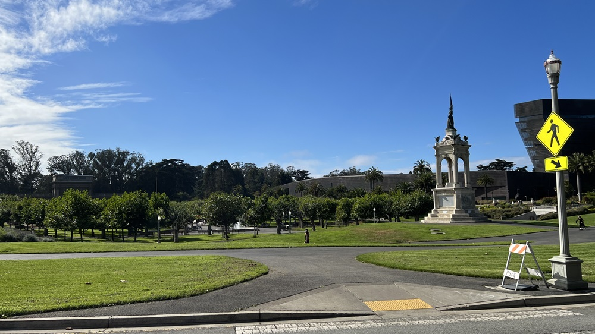
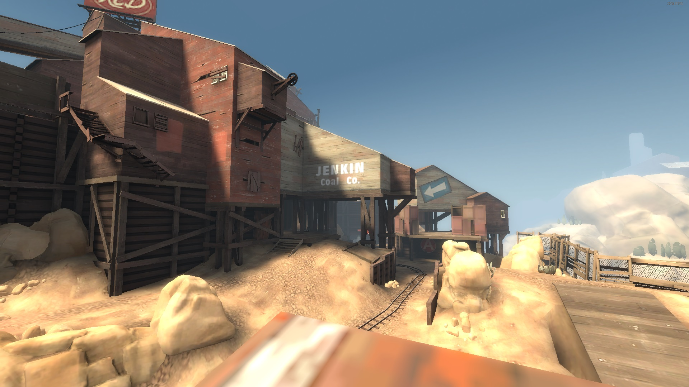
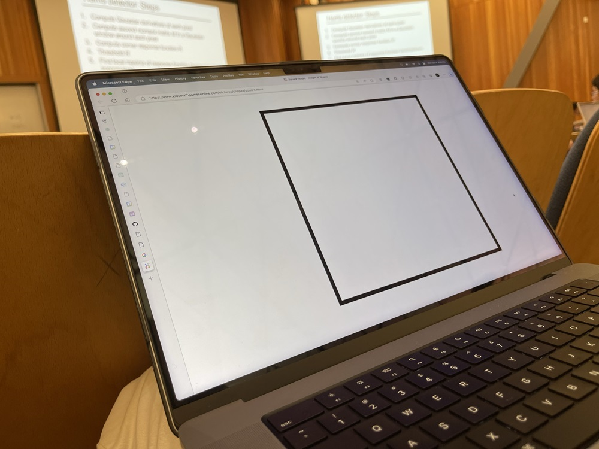
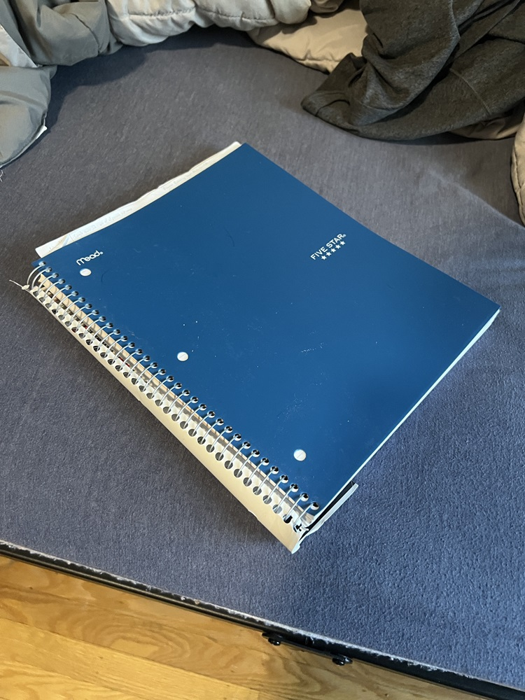

This project is split into two parts with the first one covering how to warp an image, and mosaicing, effectively allowing someone to stitch images together based on correspondence points
I took some pictures of the outdoors on a trip, but for the next part I will definitely take a few more especially ones of the indoors
|  |  |
|  |
The images are selected and taken intentionally so that some elements overlap from picture to picture
Using the same correspondence tool provided by the spec of project 3. I labeled corresponding points from a pair of images using their clicking tool.
The calculation for the homography matrix, is effectively solving b = HA for H.
In this equation, b is the resulting point locations, A is the initial source image point locations, and H is the homography matrix, a 3x3 transforming matrix
Matrices A and b are required to be homogenous matrices, where each column must end with a 1 following the x and y coordinates of a point. As a result of this, when using the homography matrix we must divide all entries by their final column entry.
We can find this homography matrix by using least squares
Using the homography matrix calculated in the previous part, we can essentially warp any coordinates from the original image to its corresponding warped version (placing the point to its position within the perspective of the base image)
We can take the initial corners of the original image and warp them to get the boundaries of the resulting warped image. From here we can following a similar process used in project 3 by using skimage.draw.polygon to get all of the points within the new boundaries
We can then interpolate the points from the initial image to its corresponding position in the warped image bounds
My warpImage function still has some issues on determining the new boundaries and as a result, some of the images later may not follow the correct dimensions
This process of warping can be used to rectify photos by placing them within the perspective of another image. By manually selecting 4 corner points we can take a slanted object and return it to a rectangular position.
|  |
|
|  |
|
The mean shape of a population is found by calculating the coordinates of each image's correspondence points. As the library's provided images do not have correspondence points in the corners, they are manually added so that the majority of the image is preserved.
After the mean shape is calculated, Each image is warped along with the mean shape, and the average values of all of the warped images determines the "mean face".
The FEI Face Database was used for this project, which supplied correspondence points for each image.

Mean Face
Some examples of images from the database warped into the "mean face"

|

|

|

|

|

|

|

|

|
Myself warped into the mean face and vice-versa


The results of this are a little janky most likely due to the distance between correspondence points. The face is more centered in the provided images and their hair is fully in view while the top of my head is slightly off of the screen leading to the vertical stretching in the warped image.
A caricature can be made by warping shape wise from a population mean, creating an exaggerated image. This can be done using a factor to determine how much weight would be in finding a midway shape, and a dissolve_frac would be used to determine distortion in the resulting image.

I looked up average images of the female gender on the internet and decided to take an image of the average Southeast Asian female.
Using the correspondence tool from the first part I found the correspondence points corresponding to myself and the Southeast Asian image.
To find the morphed shape we can use the morph function from earlier but set dissolve_frac to 0.
To find the morphed appearance we can use the morph function but set warp_frac to 0
To find the morphed image we do not set either of the factors to 0

Me |

Southeast Asian Female |

Morphed Shape |

Morphed Appearance |

Morphed |